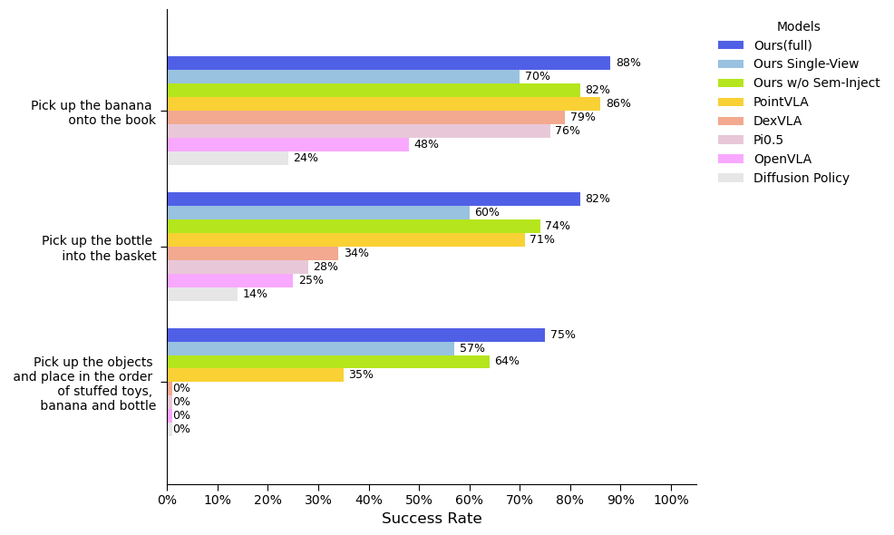
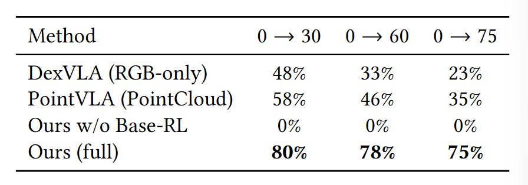
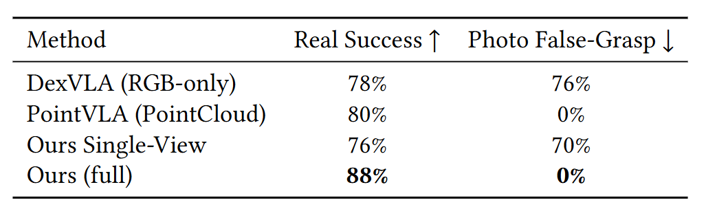
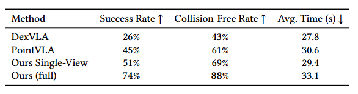
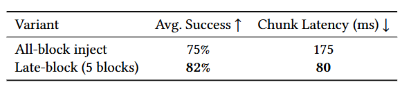

Embodied mobile manipulation poses a core embodied multimedia challenge: aligning language, visual observations, three-dimensional scene structure, and action feasibility into a unified representation for decision-making. In this work, we study local-area open-vocabulary manipulation in household environments and present an embodied multimodal grounding framework that integrates active multi-view Semantic 3D Gaussian Splatting, reachability-aware base positioning, and a diffusion-based vision-language-action policy. Our key idea is to fuse semantic, visual, and geometric cues into a compact language-grounded local 3D representation that explicitly bridges perception and action. This representation improves target grounding under clutter, occlusion, viewpoint variation, and appearance-based distractors, while also exposing local geometry for safer and more reliable execution. We evaluate the proposed framework in few-shot real-robot settings and observe consistent improvements over RGB-only and point-cloud baselines. In particular, our method achieves 60% long-horizon success, maintains 75% success under 75 cm height shifts, eliminates photo-induced false grasps, and substantially improves clutter-aware manipulation in heavily occluded scenes.





@misc{ou2026embodiedmultimodalgroundingopenvocabulary,
title={Embodied Multimodal Grounding for Open-Vocabulary Mobile Manipulation via Semantic 3D Gaussian Splatting},
author={Huosen Ou and Dongni Song and Yuncong Wang and Tao Zhou and Yiding Ji},
year={2026},
eprint={2608.10756},
archivePrefix={arXiv},
primaryClass={cs.RO},
url={https://arxiv.org/abs/2608.10756},
}